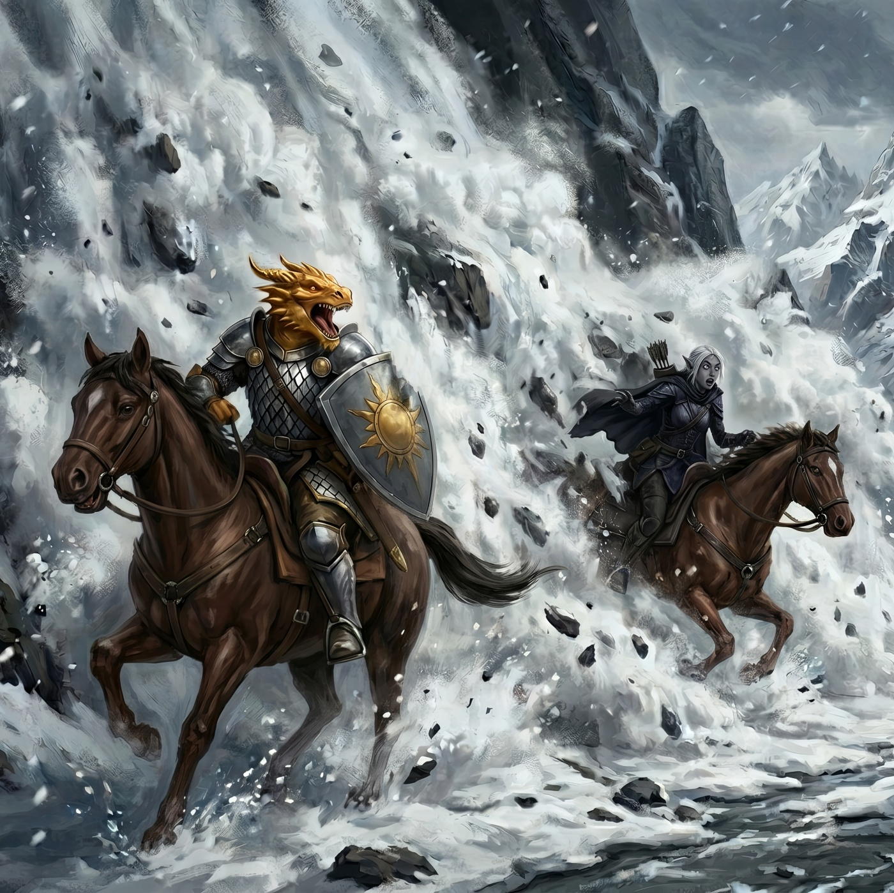

In which our battered but intrepid company, having just finalized a rather messy disagreement with some frost giants, sets about the truly insurmountable historical hurdle of retrieving their own spooked horses—an ordeal made infinitely worse by a well-meaning halfling turning into an apex predator and alarming the poor beasts all over again. Exhausted by this momentous equine diplomacy, the party retires to a remarkably tidy secret drow cache, only to embark the next morning into a bitter chill that is frankly quite uncalled for. As they navigate a tight gorge, they are subjected to the somewhat discourteous interruption of a thunderous avalanche, which inconveniently buries a dragonborn and a drow beneath several tons of snow and necessitates a frantic bit of excavation with an improvised snowshoe shovel and a magically enlarged dwarf. Finding their path stubbornly choked by the offending ice, and manfully ignoring the distracting allure of some passing yeti tracks, the company agrees upon the only sensible detour available: dismissing the horses, backtracking to the aforementioned secret cave, and casually strolling through a false wall into the sunless, terrifying, and purportedly monster-filled expanse of the Underdark.
The deafening quiet of the ravine was broken by the frantic crunch of boots on snow. Kragor, having abandoned his position the moment the final giant fell, crossed the churned earth at a dead sprint. Elara stood amidst the carnage, chest heaving, the fading arcane sparks of her final volley still clinging to the tip of her wand. But the adrenaline was already beginning to recede, laying bare the brutal, ragged tear in her leather armor and the blood still seeping from where the greataxe had found its mark. She swayed, and Kragor was suddenly there, his large hands hovering over her in a rare display of hesitance, before gently guiding her toward the canyon wall.
Before the orc could attempt any desperate battlefield medicine, Therin arrived. The dragonborn knelt beside them with quiet solemnity, his voice rising in a resonant, thrumming draconic hymn. A wash of golden, mineral-scented warmth spread from his scaled hands, knitting the torn flesh together and drawing the worst of the lingering pallor from Elara’s cheeks as she leaned heavily against the cold stone.
With the immediate threat resolved, the grim work of post-battle logistics began. Four of the horses, terrified by the sudden arrival of the frost giants, had bolted into the mountains. Doctor Pepe, borrowing Therin’s mount, set off into the winding canyons to search, while Kragor took off in the opposite direction. Therin and Hilda, meanwhile, set about the practical task of searching the massive corpses. They unearthed a handful of crude dwarven hammers and axes, alongside a heavy purse containing roughly a hundred gold pieces in mixed currency.
While the rogue navigated the shadowed defiles, Taskhand Serath reached out via a whispered magical message that manifested directly in Doctor Pepe’s mind. The rogue reported success: he had located two of the runaways in a dead-end canyon and was leading them back to the camp.
Kragor’s search proved fruitless, a failure he reported to the Taskhand when the drow reached out to him next. Scarlet, having maintained her chitinous spider-form just long enough to send Sparky on an aerial survey, let the wild magic recede, shrinking back down to her familiar halfling self. The owl returned moments later with the location of a third horse, prompting Scarlet to adopt the sinewy, muscular form of a moorbounder and sprint off in pursuit.
This plan, while efficient, proved disastrous in practice. As the moorbounder closed the distance, Kragor’s own mount caught wind of the apex predator and immediately panicked, tearing off down the canyon. It took Kragor a long, exhausting effort to wrestle the terrified animal to a halt, only for Sparky to swoop down a moment later and spook the horse all over again.
Scarlet, realizing the chaos her predatory form was causing, left Kragor to manage his mount and altered her approach as she continued tracking the third runaway. Slinking through the snow with predatory stealth, she soon located the horse trotting steadily homeward. She closed the distance, dropped her wild shape, and jogged the remaining span as a halfling. A few magically conjured morsels were enough to coax the animal into letting her grab the reins, allowing her to pull herself into the saddle and ride back toward the battlefield.
By the time Doctor Pepe had returned to camp and received a wash of restorative magic from Serath to mend his wounds, Kragor and Scarlet had also arrived with their respective mounts. Kragor rode in to find Hilda and Brennik leaning against a rock, sharing a sandwich with the profound exhaustion of those who had survived the morning.
Off to one side, Serath was having a quiet, intense conversation with his guards, his posture suggesting a reprimand directed at Aedric. Whatever the breach of protocol, it was put aside as the party reconvened. With the afternoon waning and Elara’s horse still missing, the Taskhand announced that the Kryn Dynasty maintained a hidden cache nearby—a secure place to rest for the night.
Scarlet and Elara shared a mount, and the bruised company set off deeper into the mountains, guided by the sweet, lilting notes of Elara’s flute. They stopped before a sheer, unremarkable rock face. Aedric rode forward and simply passed through the stone—an illusion masking the entrance to a pristine cave. Inside, the cache was arranged with military precision: shelves of supplies and rows of cots laid out like a barracks.
Therin and the Taskhand conjured pale, dancing lights to illuminate the cavern. While Therin set about cooking a proper meal for the exhausted company, Doctor Pepe slipped away to the edge of the magical light, his rogue’s instincts prickling. The seam where the back wall met the floor was impossibly precise, the stonework lacking the natural curvature of the surrounding rock. He suspected it was a false wall, concealing deeper tunnels. He returned to the group, deciding that investigating a secret drow cache while surrounded by highly trained drow soldiers was a poor career move. Later, as the party settled into their cots, Brennik began chattering with nervous, post-combat adrenaline. Across the cave, Therin hurled a cup into the dark. “Shut up, Brennik!” the dragonborn growled. “Trying to sleep.”
The next morning broke bitterly cold. Therin and Kragor prepared a hearty breakfast, accompanied by the bright, uplifting notes of Elara’s harp—a cheerful start to a day that would quickly deteriorate.
As the company prepared to depart, Doctor Pepe pulled Elara aside. He whispered his suspicions about the cavern’s false back wall, his rogue’s avarice warring with common sense. Elara firmly reminded him that the drow were their allies, and their primary mission took precedence. Unwilling to let the matter rest, Doctor Pepe approached Kragor, signaling his need for a confidential discussion. The orc obligingly established a telepathic link between them, but ultimately agreed with Elara: the risk of investigating the cache under the noses of the Kryn soldiers was too great. They could always return another time.
They set out beneath a leaden sky, navigating a narrow, winding gorge that cut deeply between towering peaks. The temperature plummeted. Elara, still sore from the brutal impact the day before, found the biting wind cutting straight through her armor, leaving her shuddering with a bone-deep, exhausting chill.
In the early afternoon, as the column threaded through a particularly tight choke point, a sound like tearing canvas ripped through the thin air. High above them, a shelf of snow broke free from the mountain face. What began as a minor slippage rapidly cascaded into a thunderous, white wall of death.
The party scrambled for the precarious safety of the canyon walls, spurring their mounts with frantic urgency. Most cleared the impact zone by a breathless margin. Therin and Vornesh did not. The avalanche swallowed them whole, the roar of the impact burying the dragonborn, the drow, and their horses beneath tons of compacted snow and rock.

Silence reclaimed the gorge, broken only by the settling of ice and the panicked stamping of the surviving mounts. Almost immediately, a narrow line of brilliant, searing fire punched through the surface of the snowdrift—Therin’s dragon breath, carving a desperate vent to the surface. Nearby, the air warped and shimmered as Vornesh’s purple-tinted echo appeared above the snowpack; a moment later, the drow soldier swapped places with her magical duplicate, appearing gasping on the surface. Her mount, however, remained entombed.
The party descended on the avalanche debris with frantic purpose. Scarlet’s form rippled and swelled until a massive brown bear stood in her place, immediately tearing into the compacted snow with plate-sized claws. Kragor unstrapped one of his snowshoes to use as an improvised shovel, pairing his physical labor with the invisible shove of his telekinetic talent, violently blasting away chunks of compacted powder. Elara, surveying the desperate excavation, wove a spell that swelled Hilda to twice her normal size, turning the dwarf into a living siege engine capable of shifting huge swathes of snow with every heave.
It was grueling, terrifying work, but they soon uncovered the dragonborn and the two trapped horses. A moment of delicate crisis arose when Scarlet, still in bear form, exposed one of the terrified animals; she was forced to drop her wild shape and tumble back into her halfling form to avoid sparking another panic.
Once the frantic excavation was complete, Scarlet moved among the shivering, battered horses, drawing upon the deep well of nature’s magic to knit their bruised flesh and calm their frayed nerves. The immediate danger had passed, but a larger problem loomed: the avalanche had entirely choked the gorge. Sparky, dispatched on an aerial reconnaissance, returned with bleak news. The blockage stretched on seemingly forever; there was no alternate surface route through this part of the mountains.
The party gathered at the edge of the snowpack to weigh their dismal options. Hilda, typically the voice of pragmatic action, admitted she had no idea how to proceed. It was the Taskhand who offered a solution, though his proposal came with a heavy caveat. He knew of another path—an underground route that would bypass the mountains entirely and deposit them halfway across the Rime Plains. The horses, however, could not make the journey.
He turned to the dwarven warrior. “Could you take the mounts back to Uthodurn?”
Hilda narrowed her eyes, assessing the drow. “What exactly do you have in mind?”
“We know of an underground route,” the Taskhand repeated smoothly.
Elara sighed, her breath pluming in the freezing air. “Please tell me that doesn’t take us through the Underdark.”
The Taskhand offered a slight, acknowledging nod. He admitted that it did. Hilda expressed genuine surprise that such a subterranean passage existed so close to Uthodurn’s borders—and that the Taskhand candidly shared its existence. Kragor, conversely, practically vibrated with excitement. The Underdark was a realm of legend, a terrifying, alien ecosystem teeming with monstrous threats like the fabled bulette. To the orc, it sounded like an absolute delight.
Ultimately, Hilda agreed to take the horses back once the time came to part ways. “I trust,” the Taskhand added graciously, his tone perfectly balancing diplomacy and warning, “that Uthodurn will keep secret this new information, as befits allies.”
The entrance to the subterranean passage lay several hours behind them. With the late afternoon sun already dipping below the peaks, the Taskhand laid out their timeline: they could make camp in the avalanche debris and begin the backtrack tomorrow, or they could push on into the freezing evening and reach the tunnel entrance before midnight. Unanimously, the party chose to push on.
They began the long backtrack through the darkening mountains. As the light failed entirely, the drow set up a relay of floating, violet-tinged lights to guide the horses, while the rest of the party supplemented the illumination with a lantern, conjured flames, and weapons glowing with magical light.
Riding alongside the column, Elara noticed Hilda and the Taskhand engaged in a quiet, intense conversation. She urged her mount forward, adopting a bright, inquisitive tone as she asked what they were discussing. The Taskhand offered a perfectly polite, entirely uninformative smile. They were merely reflecting, he explained smoothly, on how it behooved both their peoples to share secrets.
The exhausting ride was further complicated when the vanguard spotted a set of massive tracks crossing the snow. Kragor, lacking any tracking expertise but possessing a fervent desire to acquire a yeti pelt, inspected the impressions and immediately declared them to be the work of a yeti. As the biting cold took a worsening physical toll on Doctor Pepe, Scarlet, and Aedric, the orc enthusiastically outlined a plan to the Taskhand for trapping the beast. The drow commander, surveying his shivering, battered companions, flatly refused, stating that they would do nothing to endanger their mission.
Doctor Pepe noticed a point where the strange tracks diverged from their path. He and Kragor briefly debated following the trail, but a grim assessment of the party’s current condition persuaded them to abandon the hunt.
Near midnight, the familiar, sheer rock face loomed out of the darkness. They had returned to the Kryn cache. The party filed through the illusory stone with profound relief. Even the ever-vigilant Aedric bypassed his usual perimeter check, collapsing onto a cot the moment they were inside.
The next morning, the party helped Hilda assemble the string of horses for the long journey back to Uthodurn. The dwarf took a moment to offer Brennik some gruff, practical encouragement, reminding the nervous warrior that he was now Uthodurn’s sole representative on this mission. Brennik’s chest puffed up slightly as he understood and accepted the weight of the responsibility. A few paces away, Kragor could be seen attempting to deliver a similar pep talk to his horse, with mixed results.
The drow gathered their packs, checking their weapons and gear with practiced efficiency. “Follow us,” the Taskhand instructed, leading them directly to the false back wall Doctor Pepe had spotted during their previous stay. He turned to the assembled group with a final, pointed request: they were to keep the existence of this entrance strictly to themselves.
The initial stretch of the tunnel was entirely smooth and perfectly round, lacking the irregular ridges and fractures of natural stone. Kragor, hopeful for subterranean horrors, mused aloud that it might be the work of a purple worm. Therin ran a scaled hand along the seamless wall and asked the Taskhand what had made the passage.
“We elongated a natural cavern to come to the surface,” the Taskhand replied. It was the only explanation he was willing to offer.
After a quarter-mile of smooth, descending stone, the tunnel gave way to a vast, natural cavern complex. Several branching paths presented themselves, plunging deeper into the dark. Following the Taskhand’s lead, the party took a gently sloping tunnel downward, leaving the surface world and the freezing winds of the mountains far behind.
Ahead lay the Underdark, with all its terrifying wonders waiting in the sunless depths.